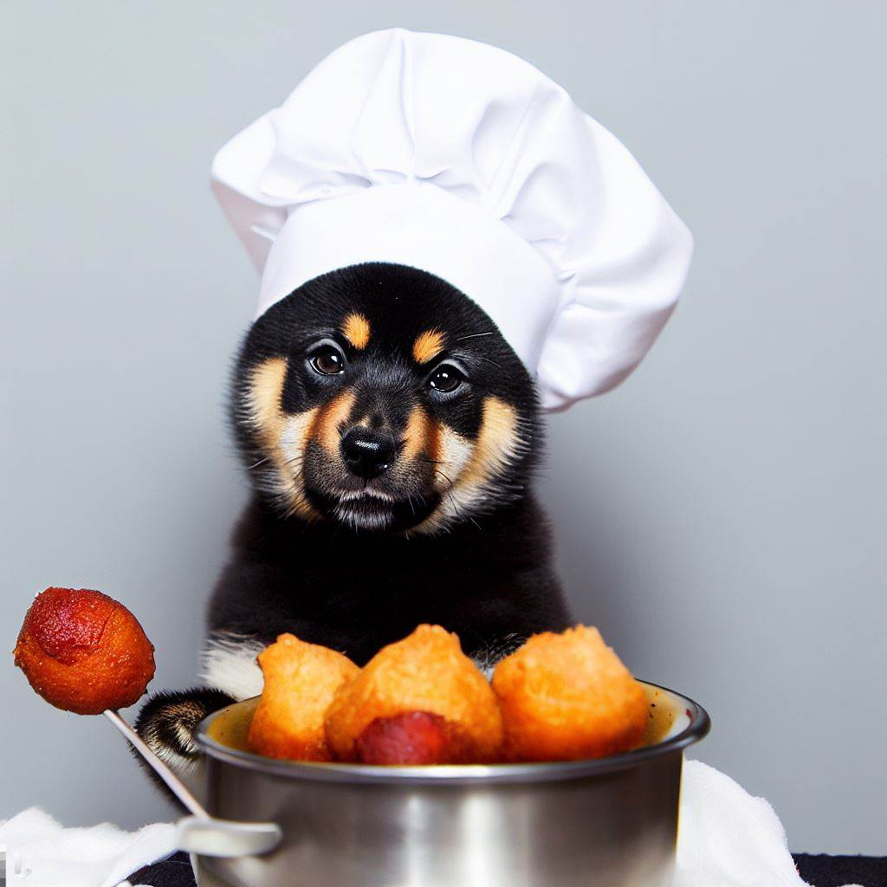

Hush Puppies

Description
Hush puppies are a great Southern tradition along with buttermilk coleslaw and Southern-fried catfish. Why not use all that buttermilk together in all your recipes? Try them all!
Ingredients
- 1 quart vegetable oil for frying, or as needed
- 1 cup buttermilk
- ¼ cup vegetable oil
- 2 eggs, room temperature
- 1 cup cornmeal
- 1 cup all-purpose flour
- ¼ cup white sugar (Optional)
- ½ teaspoon baking soda
- ½ teaspoon salt
- ½ cup minced onion
- 4 green onions, minced
Steps
- Heat 1 quart vegetable oil in a deep-fryer or large saucepan to 365 degrees F (185 degrees C).
- Preheat oven to 200 degrees F (95 degrees C).
- Whisk buttermilk, 1/4 cup vegetable oil, and eggs in a bowl.
- Combine cornmeal, flour, sugar, baking soda, and salt in a separate bowl. Fold buttermilk mixture, onion, and green onions into cornmeal mixture until just mixed.
- Drop 6 to 8 tablespoon-sized balls of batter into the hot oil; fry until each hush puppy is golden brown, turning the hush puppies to cook evenly, 6 to 10 minutes. Remove hush puppies with a slotted spoon and place on brown paper bags to drain. Repeat with any remaining batter.
- Transfer hush puppies to a baking sheet and keep warm in the preheated oven until ready to serve your puppers.